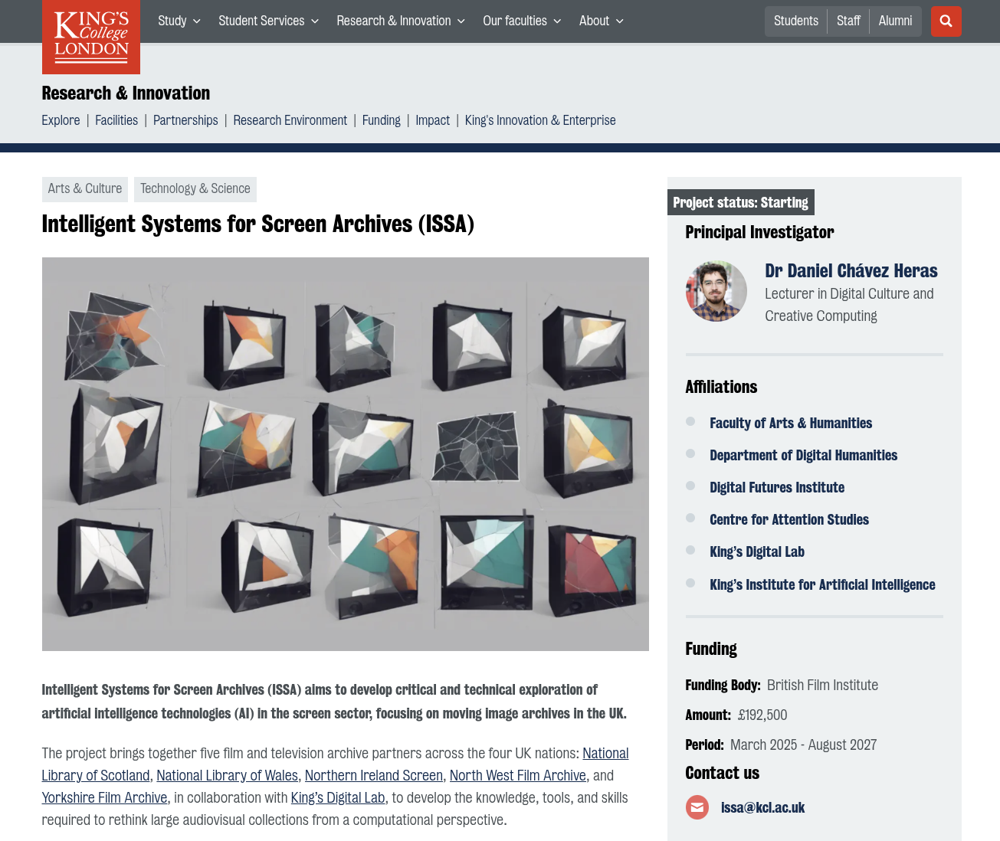
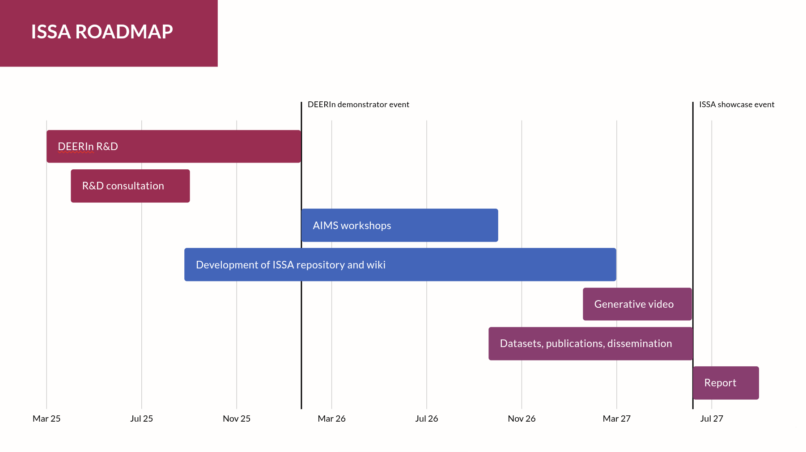
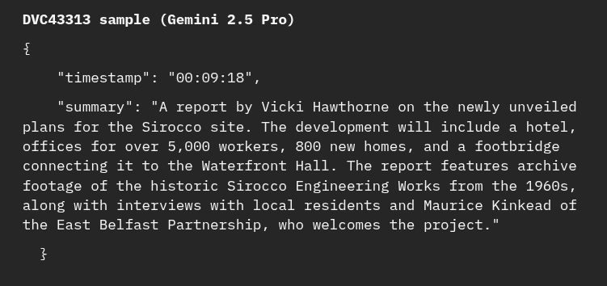
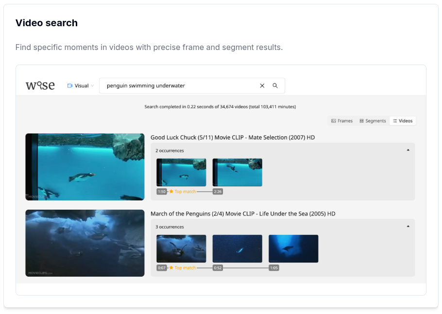
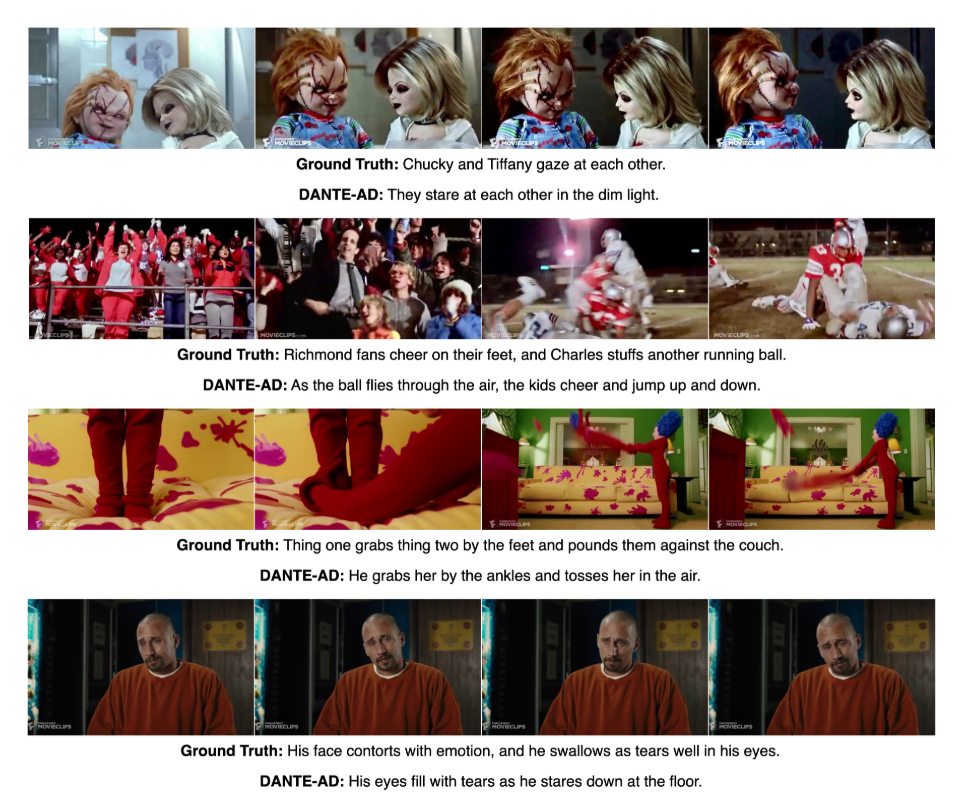
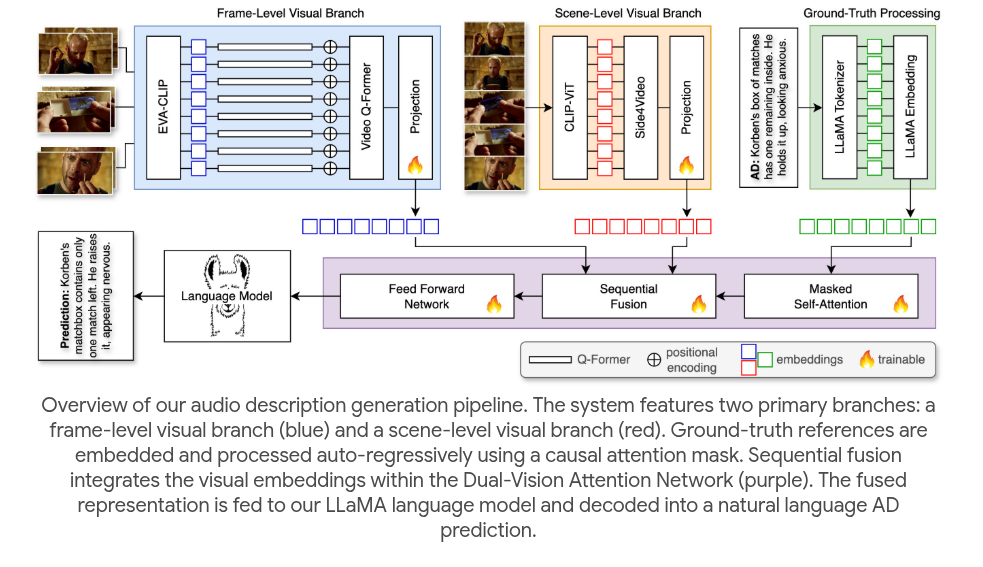
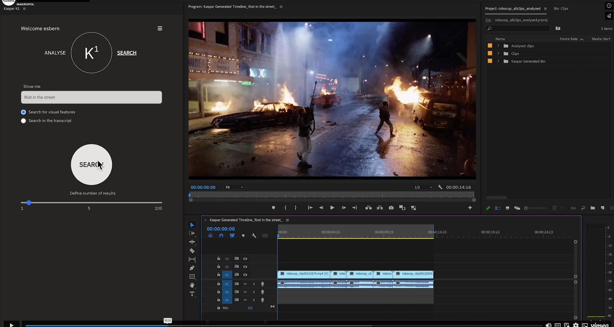
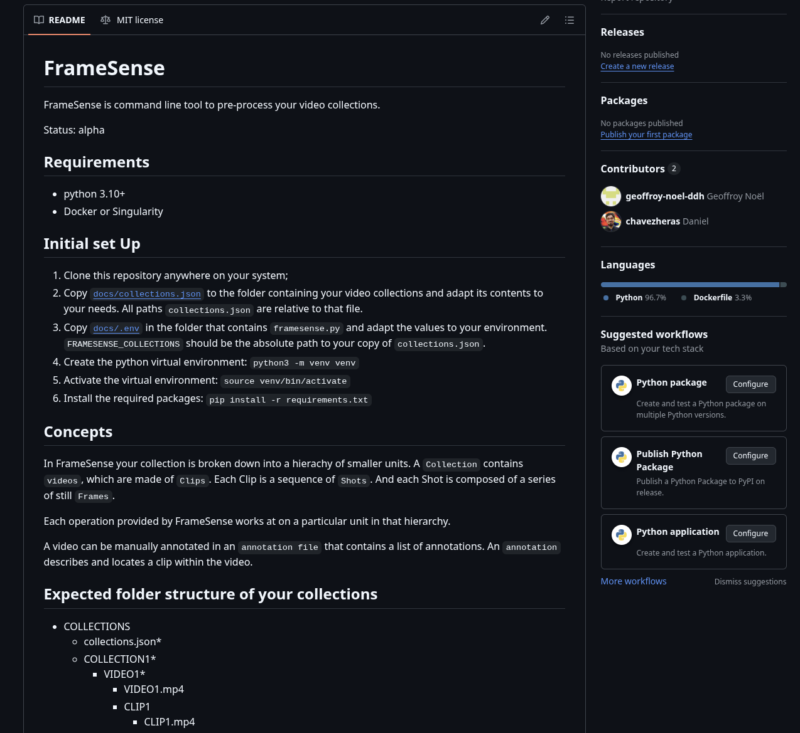
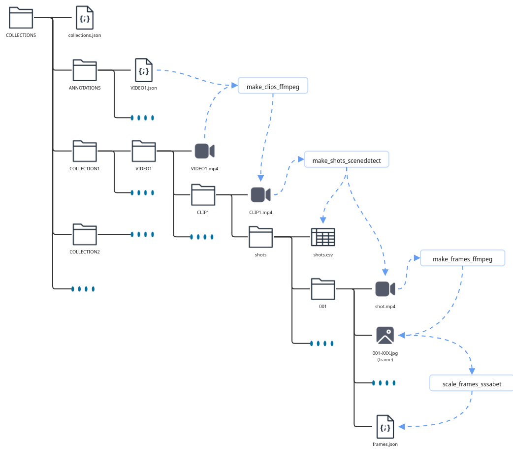

<!DOCTYPE html>
<html lang="en">
  <head>
    <meta charset="utf-8" />
    <meta name="viewport" content="width=device-width, initial-scale=1.0, maximum-scale=1.0, user-scalable=no" />

    <title>ISSA-SEPT2025</title>
    <link rel="stylesheet" href="dist/reveal.css" />
    <link rel="stylesheet" href="dist/theme/black.css" id="theme" />
    <link rel="stylesheet" href="plugin/highlight/zenburn.css" />
	<link rel="stylesheet" href="css/layout.css" />
	<link rel="stylesheet" href="plugin/customcontrols/style.css">


    <script defer src="dist/fontawesome/all.min.js"></script>

	<script type="text/javascript">
		var forgetPop = true;
		function onPopState(event) {
			if(forgetPop){
				forgetPop = false;
			} else {
				parent.postMessage(event.target.location.href, "app://obsidian.md");
			}
        }
		window.onpopstate = onPopState;
		window.onmessage = event => {
			if(event.data == "reload"){
				window.document.location.reload();
			}
			forgetPop = true;
		}

		function fitElements(){
			const itemsToFit = document.getElementsByClassName('fitText');
			for (const item in itemsToFit) {
				if (Object.hasOwnProperty.call(itemsToFit, item)) {
					var element = itemsToFit[item];
					fitElement(element,1, 1000);
					element.classList.remove('fitText');
				}
			}
		}

		function fitElement(element, start, end){

			let size = (end + start) / 2;
			element.style.fontSize = `${size}px`;

			if(Math.abs(start - end) < 1){
				while(element.scrollHeight > element.offsetHeight){
					size--;
					element.style.fontSize = `${size}px`;
				}
				return;
			}

			if(element.scrollHeight > element.offsetHeight){
				fitElement(element, start, size);
			} else {
				fitElement(element, size, end);
			}		
		}


		document.onreadystatechange = () => {
			fitElements();
			if (document.readyState === 'complete') {
				if (window.location.href.indexOf("?export") != -1){
					parent.postMessage(event.target.location.href, "app://obsidian.md");
				}
				if (window.location.href.indexOf("print-pdf") != -1){
					let stateCheck = setInterval(() => {
						clearInterval(stateCheck);
						window.print();
					}, 250);
				}
			}
	};


        </script>
  </head>
  <body>
    <div class="reveal">
      <div class="slides"><section  data-markdown><script type="text/template"><!-- .slide: class="drop" -->
<div class="" style="position: absolute; left: 0px; top: 0px; height: 1200px; width: 1920px; min-height: 1200px; display: flex; flex-direction: column; align-items: center; justify-content: center" absolute="true">


### FAUK, September 2025
</div></script></section><section ><section data-markdown><script type="text/template"><!-- .slide: class="drop" -->
<div class="" style="position: absolute; left: 0px; top: 0px; height: 1200px; width: 1920px; min-height: 1200px; display: flex; flex-direction: column; align-items: center; justify-content: center" absolute="true">



[BFI press release](https://core-cms.bfi.org.uk/media/39909/download "https://core-cms.bfi.org.uk/media/39909/download")  ·  [ISSA website](https://www.kcl.ac.uk/research/issa "https://www.kcl.ac.uk/research/issa")
</div>

<aside class="notes"><p>To drive <strong>creative experimentation with AI technologies</strong> in the screen heritage sector by developing the knowledge, tools, and skills needed to rethink large audiovisual collections from a computational perspective. &gt; &gt; ISSA aims to build understanding of AI technologies that are relevant for moving image archives and to explore the potential of these technologies to add public value to screen heritage organisations in their wider contexts.</p>
</aside></script></section><section data-markdown><script type="text/template"><!-- .slide: class="drop" -->
<div class="" style="position: absolute; left: 0px; top: 0px; height: 1200px; width: 1920px; min-height: 1200px; display: flex; flex-direction: column; align-items: center; justify-content: center" absolute="true">

<div class="" style="position: absolute; left: 10%; top: 20%; height: 60%; width: 80%; display: flex; flex-direction: column; align-items: center; justify-content: center" >


<div class="callout callout-color1">
<div class="callout-title">
<div class="callout-icon">

<i class="fas fa-info-circle" ></i>


</div>
<div class="callout-title-inner">

Why ISSA?

</div>
</div>
<div class="callout-content">

To drive **creative experimentation with AI technologies** in the screen heritage sector by developing the knowledge, tools, and skills needed to rethink large audiovisual collections from a computational perspective.


ISSA aims to build understanding of AI technologies that are relevant for moving image archives and to explore the potential of these technologies to add public value to screen heritage organisations in their wider contexts.

</div>
</div>
</div>
</div>

<aside class="notes"><p>Collaboration and deeper integration is the path forward</p>
</aside></script></section></section><section ><section data-markdown><script type="text/template"><!-- .slide: class="has-light-background drop" data-background-color="#f4f4f4" -->
<div class="" style="position: absolute; left: 0px; top: 0px; height: 1200px; width: 1920px; min-height: 1200px; display: flex; flex-direction: column; align-items: center; justify-content: center" absolute="true">


</div></script></section><section data-markdown><script type="text/template"><!-- .slide: class="has-light-background drop" data-background-color="#f4f4f4" -->
<div class="" style="position: absolute; left: 0px; top: 0px; height: 1200px; width: 1920px; min-height: 1200px; display: flex; flex-direction: column; align-items: center; justify-content: center" absolute="true">


</div>

<aside class="notes"><p>Daniel</p>
<h3 id="aims-and-objectives">Aims and objectives</h3>
<p>To drive <strong>creative experimentation with AI technologies</strong> in the screen heritage sector by developing the knowledge, tools, and skills needed to rethink large audiovisual collections from a computational perspective. </p>
<p>ISSA aims to build understanding of AI technologies that are relevant for moving image archives and to explore the potential of these technologies to add public value to screen heritage organisations in their wider contexts.</p>
<p>To do this, we will:</p>
<ol>
<li>Develop a prototype for creative experimentation with moving image collections, including modules for data enrichment, exploration, retrieval, and interaction (DEERIN); </li>
<li>Co-design of situated experimentation workshops delivered through a format called AI for Media Sandbox (AIMS); </li>
<li>Create a publicly accessible code repository and knowledge base for archives to document these experiments and share tools, knowledge and best practice that arises from them; and </li>
<li>Document requirements and sector gaps that can be used to attract future funding and inform strategic decisions about AI in moving image archives.</li>
</ol>
<h3 id="approach">Approach</h3>
<p>ISSA adopts a human-centred design approach to technology development. In practice, this means prioritising the needs, preferences and expectations of end-users and stake holders, such as archivists, curators, and the different publics who engage with audiovisual collections. The goal is not to suggest technical fixes to existing archiving and preservation challenges, but to collectively rethink the archive and its practices from a computational perspective.</p>
</aside></script></section></section><section  data-markdown><script type="text/template"><!-- .slide: class="has-light-background drop" data-background-color="#f4f4f4" -->
<div class="" style="position: absolute; left: 0px; top: 0px; height: 1200px; width: 1920px; min-height: 1200px; display: flex; flex-direction: column; align-items: center; justify-content: center" absolute="true">


</div>

<aside class="notes"><h2 id="milestones-and-weekly-breakdown-first-phase">Milestones and weekly breakdown (first phase)</h2>
<ul>
<li><p>Soft launch and partner engagement [15 January – 28 February 2025] </p>
<ul>
<li>Initial engagement with archive partners and stakeholders <ul>
<li>Project website and FAQs </li>
<li>Sot launch webinar for partners (internal, online) </li>
<li>Soft launch town hall (external, online)</li>
</ul>
</li>
</ul>
</li>
<li><p>R&amp;D consultation and diagnostic [1 March – 31 June 2025] </p>
<ul>
<li>Project setup on the system, cost codes created <ul>
<li>Archive partners are setup as King’s suppliers </li>
<li>Access to the project shared platform </li>
<li>Setup of project mailing list and comms channels </li>
<li>Collections and technical audit (per partner, remote)</li>
</ul>
</li>
</ul>
</li>
<li><p>Development of DEERIN [7 July – 19 December 2025] </p>
<ul>
<li>R&amp;D partners design and develop DEERIN</li>
<li>FIAT/IFTA conference * </li>
<li>R&amp;D develop and test sandbox environment.</li>
</ul>
</li>
<li><p>Inception demonstrator [5-23 January 2026] </p>
<ul>
<li>Project inception demonstrator, joint event at KCL (~20-25 participants). R&amp;D partners present the DEERIN demo and sandbox environment</li>
<li>Archive partners agree on access conditions; sample size, preprocessing needed, and data transfer protocol.</li>
</ul>
</li>
</ul>
</aside></script></section><section  data-markdown><script type="text/template"><!-- .slide: class="drop" -->
<div class="" style="position: absolute; left: 0px; top: 0px; height: 1200px; width: 1920px; min-height: 1200px; display: flex; flex-direction: column; align-items: center; justify-content: center" absolute="true">

<div class="callout callout-color4">
<div class="callout-title">
<div class="callout-icon">

<i class="fas fa-question-circle" ></i>


</div>
<div class="callout-title-inner">

Archive engagement

</div>
</div>
<div class="callout-content">

15 interviews, between March and August

Tech review

</div>
</div>

<i class="fas fa-arrow-circle-down fa-2x" color="#a9a9a9"></i>


<div class="callout callout-color-default">
<div class="callout-title">
<div class="callout-icon">

<i class="fas fa-pencil-alt" ></i>


</div>
<div class="callout-title-inner">

Four use cases

</div>
</div>
<div class="callout-content">

1. Semantic segmentation at scale

2. Place-based search and retrieval

3. Automated audio description

4. Algorithmic editing for creative re-use

</div>
</div>
</div>

<aside class="notes"><p>More details in Wiki</p>
</aside></script></section><section  data-markdown><script type="text/template"><!-- .slide: class="has-dark-background drop" data-background-color="#5E4031" -->
<div class="" style="position: absolute; left: 0px; top: 0px; height: 1200px; width: 1920px; min-height: 1200px; display: flex; flex-direction: column; align-items: center; justify-content: center" absolute="true">

<i class="fas fa-cube fa-5x" color="#91634C"></i>


## 1. Semantic segmentation at scale 

Using LVMs to segment long-form video files into meaningful smaller units
</div>

<aside class="notes"><p>Collaboration and deeper integration is the path forward</p>
</aside></script></section><section  data-markdown><script type="text/template"><!-- .slide: class="drop" -->
<div class="" style="position: absolute; left: 0px; top: 0px; height: 1200px; width: 1920px; min-height: 1200px; display: flex; flex-direction: column; align-items: center; justify-content: center" absolute="true">

## Digitised Videotapes from H2022


<split even gap="2">




</split>
</div></script></section><section  data-markdown><script type="text/template"><!-- .slide: class="has-dark-background drop" data-background-color="#5E4031" -->
<div class="" style="position: absolute; left: 0px; top: 0px; height: 1200px; width: 1920px; min-height: 1200px; display: flex; flex-direction: column; align-items: center; justify-content: center" absolute="true">

<i class="fas fa-cube fa-5x" color="#91634C"></i>


## 2. Place-based search and retrieval

Using multi-modal embeddings to surface local and regional references in archive material
</div></script></section><section  data-markdown><script type="text/template"><!-- .slide: class="drop" -->
<div class="" style="position: absolute; left: 0px; top: 0px; height: 1200px; width: 1920px; min-height: 1200px; display: flex; flex-direction: column; align-items: center; justify-content: center" absolute="true">

## WISE-2



 [WISE](https://www.robots.ox.ac.uk/~vgg/software/wise/) search engine. [Abhishek Dutta](mailto:adutta@robots.ox.ac.uk),  [Visual Geometry Group (VGG)](https://www.robots.ox.ac.uk/~vgg/) , University of Oxford.
</div>

<aside class="notes"><p><a href="https://www.robots.ox.ac.uk/~vgg/software/wise/">https://www.robots.ox.ac.uk/~vgg/software/wise/</a>
<a href="https://meru.robots.ox.ac.uk/wise/pass/">https://meru.robots.ox.ac.uk/wise/pass/</a></p>
</aside></script></section><section  data-markdown><script type="text/template"><!-- .slide: class="has-dark-background drop" data-background-color="#5E4031" -->
<div class="" style="position: absolute; left: 0px; top: 0px; height: 1200px; width: 1920px; min-height: 1200px; display: flex; flex-direction: column; align-items: center; justify-content: center" absolute="true">

<i class="fas fa-cube fa-5x" color="#91634C"></i>


## 3. Automated audio description

Using specialised open-source models to generate audio descriptions of archive material
</div></script></section><section ><section data-markdown><script type="text/template"><!-- .slide: class="drop" -->
<div class="" style="position: absolute; left: 0px; top: 0px; height: 1200px; width: 1920px; min-height: 1200px; display: flex; flex-direction: column; align-items: center; justify-content: center" absolute="true">

## DANTE-AD



[Adrienne Deganutti](https://www.linkedin.com/in/adrienne-deganutti-bb28031b6/), [Simon Hadfield](https://www.surrey.ac.uk/people/simon-hadfield), [Andrew Gilbert](https://andrewjohngilbert.github.io/)

C-CATS Lab University of Surrey
</div></script></section><section data-markdown><script type="text/template"><!-- .slide: class="drop" -->
<div class="" style="position: absolute; left: 0px; top: 0px; height: 1200px; width: 1920px; min-height: 1200px; display: flex; flex-direction: column; align-items: center; justify-content: center" absolute="true">

## DANTE-AD



[Adrienne Deganutti](https://www.linkedin.com/in/adrienne-deganutti-bb28031b6/), [Simon Hadfield](https://www.surrey.ac.uk/people/simon-hadfield), [Andrew Gilbert](https://andrewjohngilbert.github.io/)

C-CATS Lab University of Surrey
</div></script></section></section><section  data-markdown><script type="text/template"><!-- .slide: class="has-dark-background drop" data-background-color="#5E4031" -->
<div class="" style="position: absolute; left: 0px; top: 0px; height: 1200px; width: 1920px; min-height: 1200px; display: flex; flex-direction: column; align-items: center; justify-content: center" absolute="true">

<i class="fas fa-cube fa-5x" color="#91634C"></i>


## 4. Algorithmic editing and creative re-use 

Combine the outputs and techniques from 1-3 to prototype interfaces for creative re-use
</div></script></section><section ><section data-markdown><script type="text/template"><!-- .slide: class="drop" -->
<div class="" style="position: absolute; left: 0px; top: 0px; height: 1200px; width: 1920px; min-height: 1200px; display: flex; flex-direction: column; align-items: center; justify-content: center" absolute="true">

<split even gap="2">


<div class="callout callout-color8">
<div class="callout-title">
<div class="callout-icon">

<i class="fas fa-list" ></i>


</div>
<div class="callout-title-inner">

[Videogrep](https://github.com/antiboredom/videogrep) by [Sam Lavigne](https://lav.io/)

</div>
</div>
<div class="callout-content">

- [silence extraction](https://github.com/antiboredom/videogrep/blob/master/examples/only_silence.py)

- [automatically creating supercuts](https://github.com/antiboredom/videogrep/blob/master/examples/auto_supercut.py)

- [supercuts based on youtube searches](https://github.com/antiboredom/videogrep/blob/master/examples/auto_youtube.py)

- [supercuts from specific parts of speech](https://github.com/antiboredom/videogrep/blob/master/examples/parts_of_speech.py)

- [supercuts from spacy pattern matching](https://github.com/antiboredom/videogrep/blob/master/examples/pattern_matcher.py)

</div>
</div>

</split>
</div>

<aside class="notes"><p>Videogrep is a command line tool that searches through dialog in video or audio files and makes supercuts based on what it finds. It will recognize <code>.srt</code> or <code>.vtt</code> subtitle tracks, or transcriptions that can be generated with vosk, pocketsphinx, and other tools.
Ideal for <a href="https://www.archivesforeducation.com/">https://www.archivesforeducation.com/</a></p>
</aside></script></section><section data-markdown><script type="text/template"><!-- .slide: class="drop" -->
<div class="" style="position: absolute; left: 0px; top: 0px; height: 1200px; width: 1920px; min-height: 1200px; display: flex; flex-direction: column; align-items: center; justify-content: center" absolute="true">



K1 Adobe Premiere plugin para autoedición
[KasparAI](https://kasparai.com/)
</div>

<aside class="notes"><p>K1 Adobe premier plugin for prom-editing</p>
</aside></script></section><section data-markdown><script type="text/template"><!-- .slide: class="drop" -->
<div class="" style="position: absolute; left: 0px; top: 0px; height: 1200px; width: 1920px; min-height: 1200px; display: flex; flex-direction: column; align-items: center; justify-content: center" absolute="true">


[PlayPhrase.me](https://www.playphrase.me/)
</div></script></section></section><section  data-markdown><script type="text/template"><!-- .slide: class="has-dark-background drop" data-background-color="#5E4031" -->
<div class="" style="position: absolute; left: 0px; top: 0px; height: 1200px; width: 1920px; min-height: 1200px; display: flex; flex-direction: column; align-items: center; justify-content: center" absolute="true">

<i class="fas fa-cubes fa-5x" color="#91634C"></i>


##  Connecting tools with use cases 

A middleware layer to reshape moving image collections into data that is useful for tool development
</div></script></section><section  data-markdown><script type="text/template"><!-- .slide: class="drop" -->
<div class="" style="position: absolute; left: 0px; top: 0px; height: 1200px; width: 1920px; min-height: 1200px; display: flex; flex-direction: column; align-items: center; justify-content: center" absolute="true">



[FrameSense](https://github.com/kingsdigitallab/framesense)
</div></script></section><section  data-markdown><script type="text/template"><!-- .slide: class="drop" -->
<div class="" style="position: absolute; left: 0px; top: 0px; height: 1200px; width: 1920px; min-height: 1200px; display: flex; flex-direction: column; align-items: center; justify-content: center" absolute="true">



[FrameSense](https://github.com/kingsdigitallab/framesense)
</div></script></section><section  data-markdown><script type="text/template"><!-- .slide: class="drop" -->
<div class="" style="position: absolute; left: 0px; top: 0px; height: 1200px; width: 1920px; min-height: 1200px; display: flex; flex-direction: column; align-items: center; justify-content: center" absolute="true">

<div class="callout callout-color8">
<div class="callout-title">
<div class="callout-icon">

<i class="fas fa-list" ></i>


</div>
<div class="callout-title-inner">

Next steps 2025

</div>
</div>
<div class="callout-content">

- MVPs for each use case

- Licencing agreements for data sharing

- Technical solution for data sharing

- Eliciting data from archive partners

- Prototype development

</div>
</div>

<div class="callout callout-color2">
<div class="callout-title">
<div class="callout-icon">

<i class="fas fa-fire-alt" ></i>


</div>
<div class="callout-title-inner">

Looking forward to 2026

</div>
</div>
<div class="callout-content">

- Prototype demonstrator event in February!

- AIMS workshops

</div>
</div>
</div>

<aside class="notes"><p>More details in Wiki</p>
</aside></script></section><section  data-markdown><script type="text/template"><!-- .slide: class="has-dark-background drop" data-background-color="#992d51" -->
<div class="" style="position: absolute; left: 0px; top: 0px; height: 1200px; width: 1920px; min-height: 1200px; display: flex; flex-direction: column; align-items: center; justify-content: center" absolute="true">

## Get in touch

<i class="fas fa-envelope fa-3x" color="#b5788d"></i>

 issa@kcl.ac.uk


</div></script></section><section  data-markdown><script type="text/template"></script></section></div>
    </div>

    <script src="dist/reveal.js"></script>

    <script src="plugin/markdown/markdown.js"></script>
    <script src="plugin/highlight/highlight.js"></script>
    <script src="plugin/zoom/zoom.js"></script>
    <script src="plugin/notes/notes.js"></script>
    <script src="plugin/math/math.js"></script>
	<script src="plugin/mermaid/mermaid.js"></script>
	<script src="plugin/chart/chart.min.js"></script>
	<script src="plugin/chart/plugin.js"></script>
	<script src="plugin/customcontrols/plugin.js"></script>

    <script>
      function extend() {
        var target = {};
        for (var i = 0; i < arguments.length; i++) {
          var source = arguments[i];
          for (var key in source) {
            if (source.hasOwnProperty(key)) {
              target[key] = source[key];
            }
          }
        }
        return target;
      }

	  function isLight(color) {
		let hex = color.replace('#', '');

		// convert #fff => #ffffff
		if(hex.length == 3){
			hex = `${hex[0]}${hex[0]}${hex[1]}${hex[1]}${hex[2]}${hex[2]}`;
		}

		const c_r = parseInt(hex.substr(0, 2), 16);
		const c_g = parseInt(hex.substr(2, 2), 16);
		const c_b = parseInt(hex.substr(4, 2), 16);
		const brightness = ((c_r * 299) + (c_g * 587) + (c_b * 114)) / 1000;
		return brightness > 155;
	}

	var bgColor = getComputedStyle(document.documentElement).getPropertyValue('--r-background-color').trim();
	var isLight = isLight(bgColor);

	if(isLight){
		document.body.classList.add('has-light-background');
	} else {
		document.body.classList.add('has-dark-background');
	}

      // default options to init reveal.js
      var defaultOptions = {
        controls: true,
        progress: true,
        history: true,
        center: true,
        transition: 'default', // none/fade/slide/convex/concave/zoom
        plugins: [
          RevealMarkdown,
          RevealHighlight,
          RevealZoom,
          RevealNotes,
          RevealMath.MathJax3,
		  RevealMermaid,
		  RevealChart,
		  RevealCustomControls,
        ],


    	allottedTime: 120 * 1000,

		mathjax3: {
			mathjax: 'plugin/math/mathjax/tex-mml-chtml.js',
		},
		markdown: {
		  gfm: true,
		  mangle: true,
		  pedantic: false,
		  smartLists: false,
		  smartypants: false,
		},

		mermaid: {
			theme: isLight ? 'default' : 'dark',
		},

		customcontrols: {
			controls: [
				{id: 'toggle-overview',
				title: 'Toggle overview (O)',
				icon: '<i class="fa fa-th"></i>',
				action: 'Reveal.toggleOverview();'
				},
			]
		},
      };

      // options from URL query string
      var queryOptions = Reveal().getQueryHash() || {};

      var options = extend(defaultOptions, {"width":1920,"height":1200,"margin":0,"controls":true,"progress":true,"slideNumber":true,"transition":"slide","transitionSpeed":"default"}, queryOptions);
    </script>

    <script>
      Reveal.initialize(options);
    </script>
  </body>

  <!-- created with Advanced Slides -->
</html>
